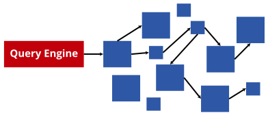
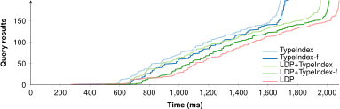
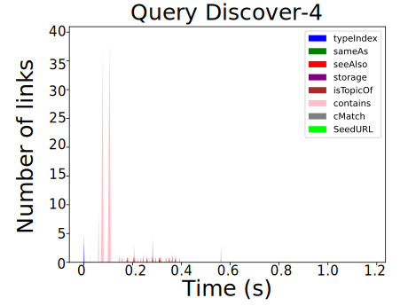
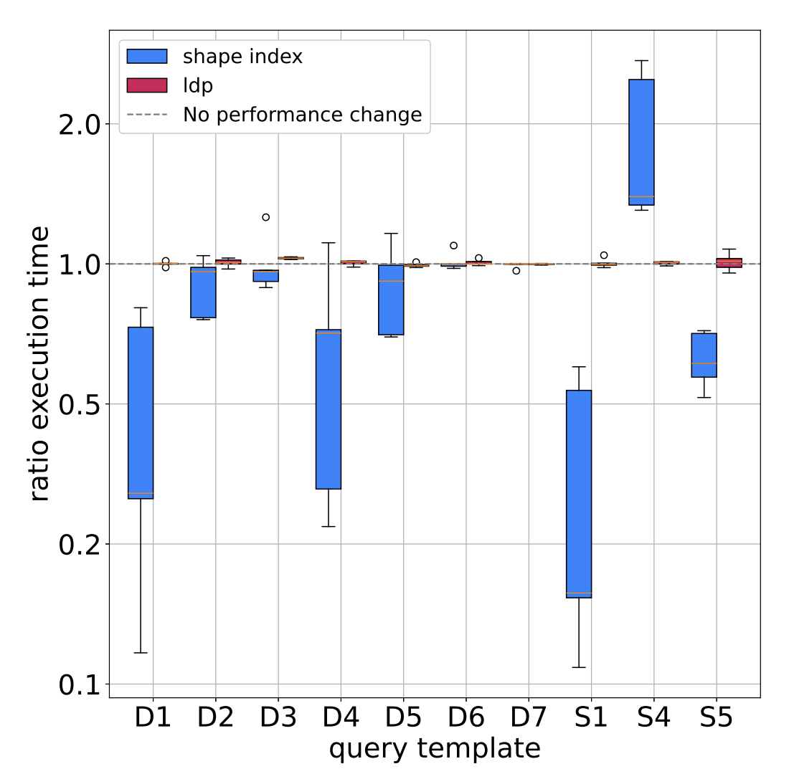

Interconnected Solid Pods form a Decentralized Knowledge Graph (DKG)
Lack of centralized index(es)
Massive number of globally distributed sources
Permissioned data
Difficulties for app developers
-
Discovering data
How can I find pods? How can I find data within a pod?
-
Combining data
How to combine data across different pods?
-
Preserving privacy
How to not leak sensitive data?
Abstract access to DKGs with query engines
Hide the complexities of reading and writing for app developers
 ↔
↔
 ↔
↔

SPARQL, GraphQL, …
Image credit
Client-side engines must follow links
-
Solid pods adhere to Linked Data Principles
Lookup more information about things by following links
➕ Fully decentralized
No dependency on intermediaries
Robust against partial unavailability
➖ Slow for complex queries

If pods expose more information, querying can become faster
-
When following links, engines can discover optimizations
If pods expose them
-
A pod can guide engines more efficiently towards relevant data
Type indexes, shape trees, shape indexes, …
-
Cross-pod indexes can prune out irrelevant pods
Aggregations or summarization of data across collections of pods
Dangers: staleness, trust, censorship, …
Query results arrive incrementally
within human attention limits

Query execution time mainly influenced by number of followed links


Pods exposing shape information allows query engines to skip many links
